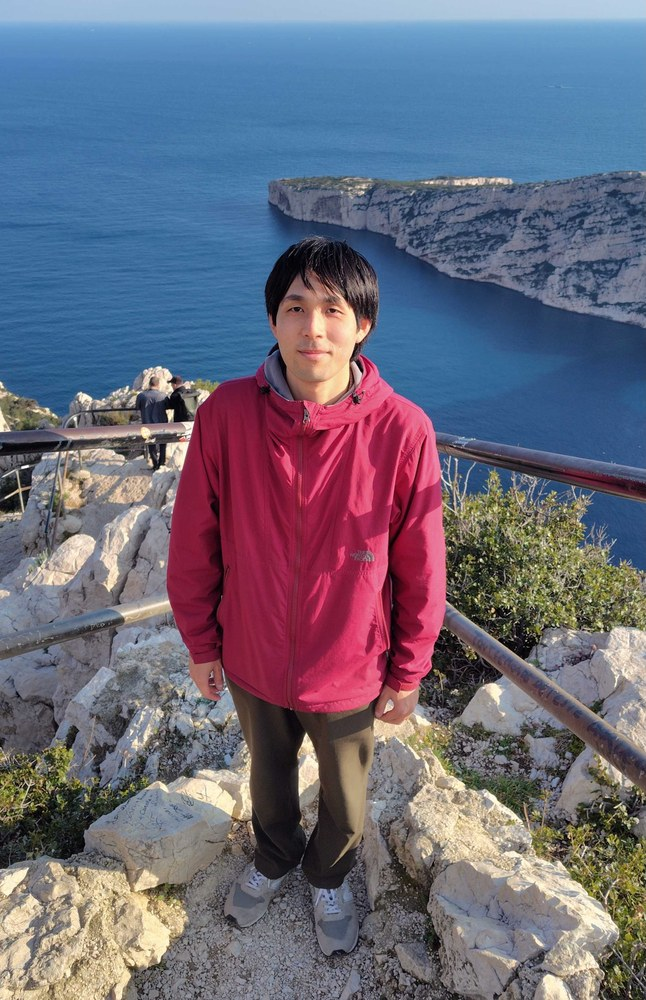

Welcome to Shintaro Minagawa's website!
Shintaro Minagawa (皆川慎太朗, he/him/his) is a postdoctoral researcher at Ravi Kunjwal's group, Laboratoire d'Informatique et Systèmes, Aix-Marseille Université. He received his Ph.D. on March 25th, 2025 through research on quantum information at Quantum Mathematical Informatics Group, Graduate School of Informatics, Nagoya University. His interests are
- Quantum measurement
- Foundations of quantum theory
- Quantum thermodynamics
- Resource theories
- General probabilistic theories

Profiles & Contact
Online Profiles
My official university email is the following:
shintaro.MINAGAWA[at]univ-amu.fr
* Please replace [at] with @ when sending messages.
* The system sometimes blocks certain emails, especially those from abroad. I also check my spam folder, but if you do not hear back from me within a few days, please contact to minagawa.shintaro[at]gmail.com
Previous news can be found here.
News 2026(Month/Date)
- 8/24-8/28
- I attended AQIS2026 and prsented works on steerig-based randomness and Quantum Channel Incompatibility.
- 8/17-21
- I attended QPL2026 and prsented a work on steerig-based randomness.
- 8/3-8/7
- I organized a workshop 量子基礎・量子情報の新展開.
- 7/27-7/31
- I visited Quantum Mathematical Informatics Group, Nagoya University.
- 7/13-7/14
- I visited Quantum Architecture Unit, Okinawa Institute of Science and Technology (OIST).
- 7/8-7/10
- I visited Condensed matter quantum computing group, The University of Osaka.
- 6/22-6/26
- I attended Causalworlds2026
- 5/29
- A paper on indefinite causal order and restricted quantum theory appeared on arXiv.NEW
- 5/13
- A paper on joint realizability tradeoff relation and quantum channel incompatibility appeared on arXiv.
- 4/9
- Poster presentation about our work on steering-based randomness certification at 90 Years of Einstein--Podolsky--Rosen Paradox: Foundations and Applications.
- 3/13
- Joint work with Ravi Kunjwal on steering-based randomness certification has been uploaded to arXiv.
- 2/6
- Joint work with NTU, UNIST, and Nagoya Univ. about catalytic quantum channels has been published in Physical Review Letters.
News 2025(Month/Date)
- 9/16-17
- I visited Condensed matter quantum computing group, The University of Osaka.
- 9/8-12
- I organized 100th anniversary of quantum mechanics “Quantum foundation and quantum information: past and future”.
- 9/1-5
- I visited UTokyo Komaba quantum information theory group.
- 7/14-18
- I attended QPL2025
- 7/8
- I received 名古屋大学岡本若手奨励賞 (Nagoya University Okamoto Young Researcher Encouragement Award)
- 6/25
- I translated an article issued by Scientific American into Japanese, which is published in Nikkei Science (「量子論に虚数は避けられないのか」日経サイエンス2025年8月号)
- 6/16-20
- I attended a summer school Summer School on Mathematical Aspects of Quantum Information (MAQI)
- 5/24-28
- I attended a summer school Mathematics and Physics of Quantum Computing and Quantum Learning
- 5/1
- I became a postdoctral researcher at Aix-Marseille University
- 4/3
- I gave a seminar on quantum measurement processes at PIS Lab, University of Tsukuba
- 4/1
- I started a new position (postdoctoral fellow) at Physico-Informatics and Systems (PIS) Laboratory, University of Tsukuba
- 3/25
- I received my Ph.D.
- 3/10-3/11
- I organized a workshop Quantum Foundations 2025 and gave an oral presentation.
- 2/7
- Joint work with Slovak Academy of Sciences about information thermodynamics has been published in npj Quantum Information.